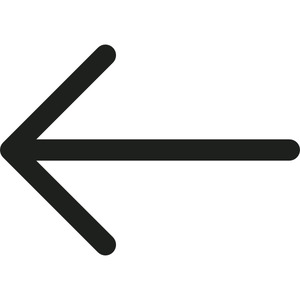

ϫⲁϭⲏ B, ϫⲁϫⲉ1, ϭ.2 F, pl ϫⲁϭⲁⲩ B nn f, left hand (S ϩⲃⲟⲩⲣ): Job 23 9 (BM 1247), Mt 6 3 BF2, ZNTW 24 90 F2, Va 68 171 ⲛⲓϣⲱⲃϣ ⲛϫⲁϭⲁⲩ ἀριστερός; Cant 2 6 F1, Ap 10 2 BF1 (Lacau) εὐώνυμος; Ps 90 7 κλίτος; C 43 47 ⲧⲉϥϫ.; as adj: Ez 4 4 ἀρ.; ROC 18 36 λαιός; KroppC 7 F ⲧⲉⲕϭⲓϫ ϭ.2; c ⲉ-: Ge 13 9 εἰς ἀρ.; c ⲥⲁ-: Ge 14 15 ἐν ἀρ., Ez 1 10 (var ⲛⲥⲁ-) ἐξ ἀρ.; Mt 25 33 (S ϩⲓϩ.) ἐξ εὐ., AM 267 ⲥⲁⲧⲉϥϫ. τῇ εὐ.
(noun feminine)
anatomy, direction
left hand [αριστερος, ευωνυμος]
as adj
as adj

1: left, 2: left hand
complete++
| ⲉ- | 8536 | 800b | |||||||
| ⲥⲁ- | 8537 | ||||||||
800a
ϫⲁϫⲉ F v ϫⲁϭⲏ.
800b
840b
ϭⲁϫⲉ F v ϫⲁϭⲏ.
See also:
Opposite:
| view | ϭⲓϫ SALF ϫⲓϫ B ϫⲓϫϩ F plural: ϫⲉⲩϫ, ϫⲉⲟⲩϫ, ϫⲉⲟⲩϫϩ, ϫⲉⲟⲩϩϫ F | (noun feminine) hand [χειρ, δραξ]150 |
| view | ϩⲃⲟⲩⲣ SF ϭⲃⲟⲩⲣ L ϭⲃⲓⲣ A | (noun feminine) left hand [αριστερα]
as adj295 |
Opposite:
| view | ⲟⲩⲛⲁⲙ SF ⲟⲩ(ⲉ)ⲓⲛⲁⲙ, ⲓⲟⲩⲛⲁⲙ, ⲟⲩⲛⲟⲙ, ⲓⲟⲩⲛⲟⲙ S ⲟⲩⲛⲉⲙ AL ⲟⲩⲓⲛⲁⲙ B ⲟⲩⲓⲛⲉⲙ, ⲟⲩⲓⲉⲛⲏⲙ, ⲓⲟⲩⲛⲉⲙ, ⲓⲟⲩⲉⲛⲏⲙ, ⲓⲱⲛⲁⲙ, ⲓⲱⲛⲏⲙ F | (noun feminine) right hand [δεξια]294 |